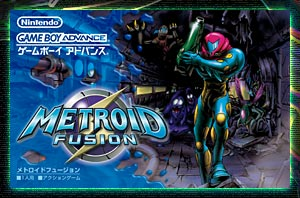
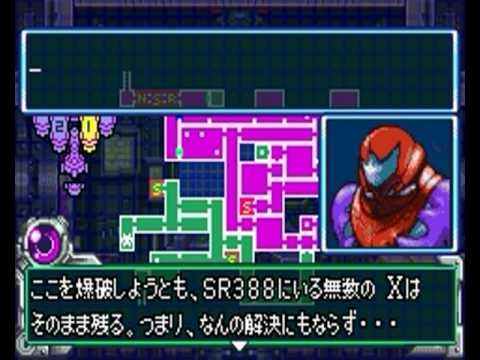
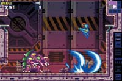

----メトロイドフュージョン----
『メトロイドフュージョン』は2003年2月14日に任天堂から発売された、、ゲームボーイアドバンス用アクションゲーム。
『スーパーメトロイド』と繋がっている続編であり、前作では文章による説明が余りなかったが本作では多く取り入られると共に、表示される文章の内容を「子供に分かりやすい内容で、文字をひらがな･カタカナを多く使用したコドモ向け」「作品のシリアスな雰囲気に合わせた大人向け」の2種類、またゲームの難易度もイージー、ノーマル、ハードの3種類から選択する事ができる。
「コドモ向け」の難易度の1つである「やさしい」は日本語版のみであり、更にクリア後はギャラリーモードが追加され、選択した文章モード･難易度･エンディングまで要した時間･アイテム回収率によってギャラリーモードの絵が少しずつ解禁されていく。
ゲームプレイ画面↓
